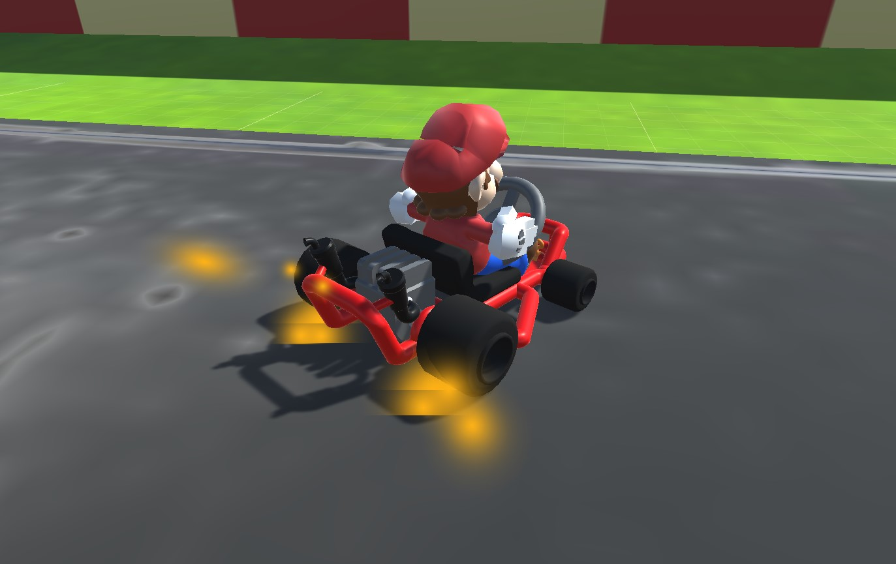

Dit is een verticale-slice van Mariokart Wii/64/8 deluxe, een combienatie van de 3. De bedoeling is dat je 10/15 seconden van het orgineel na maak.
We kozen om dit na te maken na te maken.
Ik heb vooral aan de car movement gewerkt, gas geven, remmen en sturen. Dit heb ik wel interessant gedaan, ik duw een sphere.
Het driften van de auto en de boost er van krijgen was heel moeilijk, maar leerzaam. Ik heb ook gewerkt aan particle groups.
Jammer genoeg is dit project niet af gekomen.
Github!